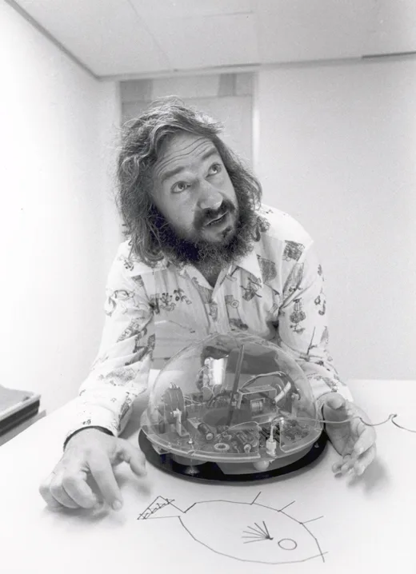
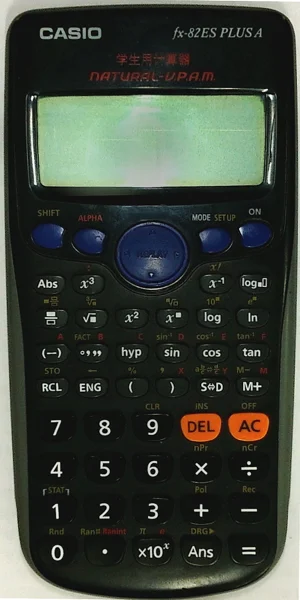

Qué es, quiénes lo iniciaron, sus cuatro pilares y el modelo Entrada, Proceso y Salida aplicados a problemas de todos los días.
El pensamiento computacional es un proceso mental que permite formular problemas y diseñar soluciones de tal forma que puedan ser ejecutadas por un agente que procesa información, sea una computadora, una persona o una combinación de ambas.
Identificar es reconocer el problema y definirlo con claridad. Analizar es descomponerlo en partes manejables. Diseñar es crear una solución estructurada y eficiente. Ejecutar es implementarla de forma sistemática.
Desarrolla el pensamiento crítico con abstracción, algoritmos, programación y simulación. Se aplica en medicina, ingeniería, economía, biología y ciencias sociales. Sirve en situaciones cotidianas.
| Sin pensamiento computacional | Con pensamiento computacional |
|---|---|
| Solo usa apps | Crea y diseña soluciones |
| Espera instrucciones | Analiza y descompone |
| Acepta lo que le dan | Identifica patrones |
| Repite procesos manuales | Automatiza tareas repetitivas |
| Se siente abrumado | Resuelve con confianza |

Pionero del pensamiento computacional. Propuso que la programación puede dar a los niños una habilidad para resolver problemas y ser creativos.
Formalizó el término pensamiento computacional.
| Año | Quién | Qué pasó |
|---|---|---|
| 1980 | Seymour Papert | LOGO y la teoría construccionista |
| 2006 | Jeannette Wing | publica el artículo histórico «Computational Thinking» |
| 2011 | BBC, ISTE y CSTA | marcos curriculares para enseñar pensamiento computacional en las escuelas |
| 2020 | Hoy | disciplina transversal en todas las carreras |
En 2011, la Computer Science Teachers Association (CSTA) y la International Society for Technology in Education (ISTE) ampliaron la idea con abstracción, análisis de datos, modelización, automatización de soluciones y generalización. Todavía no hay una definición única.
Dividir un problema complejo en tareas o etapas más manejables y específicas.
Pizza: nadie la muerde entera, se corta en porciones.
Identificar secuencias o estructuras que se repiten para reutilizar soluciones conocidas.
Capuchino, latte y macchiato: agua, café y leche en distintas proporciones.
Centrarse en lo esencial del problema y descartar los detalles irrelevantes. Se crea un modelo general.
Mapa del metro: solo estaciones, líneas y conexiones.
Diseñar la solución paso a paso, con un algoritmo.
Monopolio: lanzar los dados, aplicar la casilla, construir, pasar el turno, repetir hasta la bancarrota.
| Invitados | lista, contactos, confirmaciones |
| Lugar y fecha | reservar espacio, elegir hora |
| Comida | menú, bebidas, pastel |
| Decoración | globos, manteles, música |
Un problema grande se vuelve varios problemas pequeños.
| 2, 4, 6, 8, ? | sumar 2 cada vez |
| ▲ ■ ● ▲ ■ ? | se repite ▲ ■ ● |
| A B C A B ? | ciclo A B C |
Reconocer patrones permite predecir, generalizar y resolver más rápido.
Lo que importa: velocidad actual, distancia al destino y combustible. Lo demás se tacha. Fíjense que la distancia al destino no está en la lista: también hay que notar qué dato falta.
Un algoritmo es un conjunto ordenado y finito de operaciones que permite resolver un problema.
| Preciso | sin ambigüedad en ningún paso |
| Finito | termina en un número finito de pasos |
| Determinístico | mismo resultado con los mismos datos |
| Efectivo | llega a una solución concreta |
Lenguaje natural, pseudocódigo, flujograma y código.
| Símbolo del flujograma | Significa |
|---|---|
| Óvalo | inicio y fin |
| Rectángulo | proceso |
| Rombo | decisión de sí o no |
| Flecha | flujo |
Sumar dos números en pseudocódigo
Flujograma para hacer un sándwich
El modelo Entrada, Proceso y Salida (E-P-S) describe el flujo de información dentro de un sistema, sea humano, mecánico o digital.

Datos, materiales o estímulos que el sistema necesita para funcionar. Sin entrada válida no hay proceso.
Texto del usuario, clics, voz del micrófono.
Operaciones lógicas que transforman la entrada en información significativa. Aquí se aplica el algoritmo.
Cálculos, comparaciones, ordenar o filtrar, convertir de Celsius a Fahrenheit, guardar en memoria.
El resultado del proceso, lo que recibe el usuario o el siguiente sistema.
Visual, auditiva, impresa, física o hacia otro sistema.
| Ejemplo | Entrada | Proceso | Salida |
|---|---|---|---|
| Licuadora | frutas y agua | batido a alta velocidad | jugo |
| Calculadora | 8, el signo + y 5 | calcular la suma | 13 en pantalla |
| Cajero automático | tarjeta del banco, PIN del usuario, monto solicitado y tipo de cuenta | validar el PIN, verificar el saldo, calcular el nuevo saldo y registrar la transacción | entrega de billetes, recibo impreso, mensaje de confirmación y devolución de la tarjeta |
Comprender: qué se pide, qué datos hay, qué resultado se espera. Diseñar: descomponer, buscar patrones, abstraer y armar el algoritmo. Ejecutar: seguir el plan sin saltar pasos. Verificar: ver si cumple, si se puede mejorar y si sirve para casos parecidos.
| Descomposición | agrupar los productos por sección para no recorrer los pasillos dos veces |
| Patrones | reconocer por experiencia las marcas con mejor relación precio y calidad |
| Abstracción | ignorar promociones de productos innecesarios y centrarse en la lista |
| Algoritmo | diseñar la ruta dentro del supermercado y el orden de pago |
| Caso | Entrada | Proceso | Salida |
|---|---|---|---|
| 1. Café | café molido, agua, filtro, cafetera | calentar agua, pasar agua por el filtro, recoger el líquido | taza de café lista, aroma agradable |
| 2. Dientes | cepillo, pasta dental, agua | aplicar pasta, cepillar 2 minutos, enjuagar | boca limpia, aliento fresco, dientes sanos |
| 3. Calculadora | primer número, operador (+), segundo número | recibir operandos, aplicar la suma, calcular el resultado | resultado en pantalla |
| 4. Supermercado | lista de necesidades, presupuesto, tiempo disponible | comparar precios, elegir productos, llevar al carrito, pagar en caja | productos comprados, recibo, saldo restante |
| 5. Ruta | hora actual, tráfico en cada vía, estado del clima | comparar opciones, calcular tiempos, elegir la más rápida | ruta seleccionada, hora estimada de llegada |
| 6. Examen | temas del examen, días disponibles, materiales | dividir temas por día, asignar horarios, repasar lo difícil | cronograma de estudio, conocimientos consolidados |
| 7. WiFi | síntoma sin conexión, estado del router, mensajes de error | verificar cables, reiniciar el router, probar otros dispositivos | causa identificada, solución aplicada, WiFi funcionando |
| 8. App de recetas | ingredientes disponibles, restricciones (alergias), tiempo para cocinar | filtrar recetas compatibles, ordenar por tiempo, sugerir las mejores | lista de recetas, pasos detallados, lista de compras faltantes |
Casos 1 a 3 básicos, 4 a 6 intermedios, 7 y 8 avanzados.
| Descomposición | identifico qué datos necesito |
| Patrones | reconozco si he resuelto algo similar |
| Abstracción | filtro lo esencial y descarto lo demás |
| Algoritmia | diseño los pasos de la solución |
Antes de tocar cada tarjeta, decidan si lo que está escrito es correcto.
Resuelve en tu cuaderno, escribe en cada uno por qué elegiste esa opción, marca la opción correcta y envía la foto hoy.